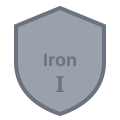
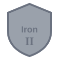
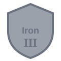

テスト(単語カード形式を除く)を合計5回行うと、「Iron Ⅰ」からランクが始まります。 ランクは Iron → Bronze → Silver → Gold → Platinum → Diamond → Master → Veritas の8階級で、 Veritasを除く各階級は Ⅰ・Ⅱ・Ⅲ の3段階に分かれています(Veritasのみ段階なしの最高ランク)。

Iron Ⅰ
Iron Ⅱ
Iron ⅢIron〜Goldは1段階あたり100ptが上限、Platinum以上は1段階あたり200ptが上限です(Veritasのみ上限なし)。 上限を超えて昇格する際、超過分のポイントはそのまま次の段階へ繰り越されます。
ランクがついている間、テストの結果に応じて以下のポイントが加算されます(単語カード形式は暗記度が変動しないため対象外の項目があります)。
出題形式が「入力記述」の場合は、上記の合計ptに×1.2したものが最終的な獲得ポイントになります。
設定画面の「Level・ランク採点」をOFFにしている間は、そのテストで獲得するランクptは常に0になります。
また、毎日1回ログインするだけでもボーナスポイントが加算されます。
現在の段階の保有ptが上限に達すると次の段階に昇格します。反対に、保有ptが0を下回りそうになった場合は 1回だけ0ptのまま踏みとどまれます(猶予)。すでに猶予を使った状態で再び0pt未満になった場合は 1段階降格し、降格後の段階では新しい開始pt(ライト帯=Iron〜Gold: 80pt / 高ランク帯=Platinum以上: 180pt)から 再スタートします(Iron Ⅰより下には下がりません)。
ランクの推移は2か月ごとの期間(シーズン)で区切られ、奇数月末日23:59に次の期間へ切り替わります (例: 8〜9月は「Sum」期間)。Diamond以上のランクは、この期間の切り替わりのタイミングで 2段階降格します。長期間ログインしていなかった場合は、ログイン時にまとめて判定されます。
アカウントタブの「ランク」欄からは、現在のバッジ・保有pt・期間ラベルに加えて、過去のランク履歴を確認できます。 履歴には同じ期間内の昇格がすべて記録され、期間が終了すると、その期間中に到達した最高ランクの1件だけに集約されます。